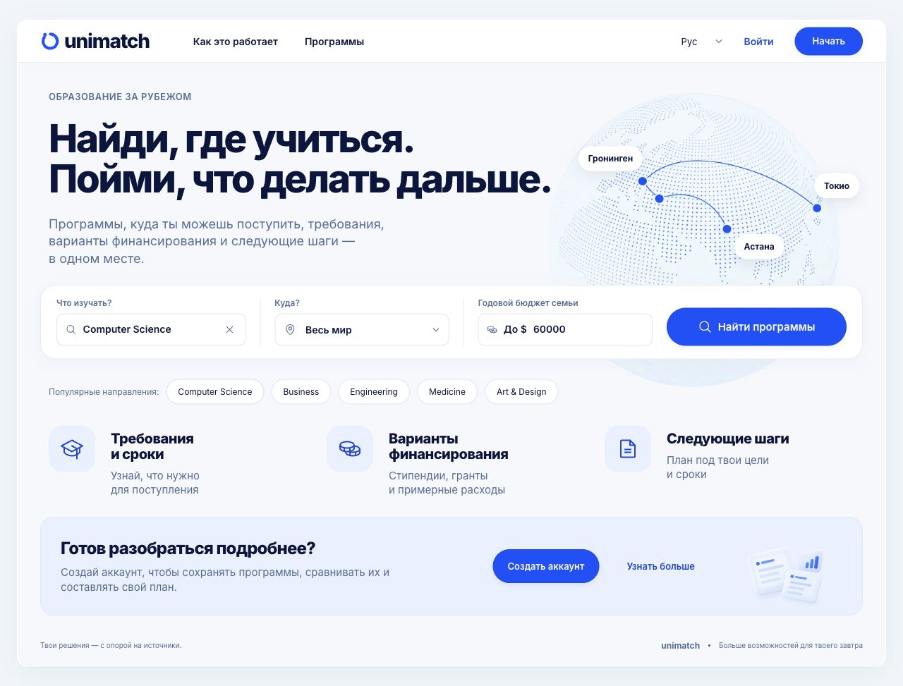
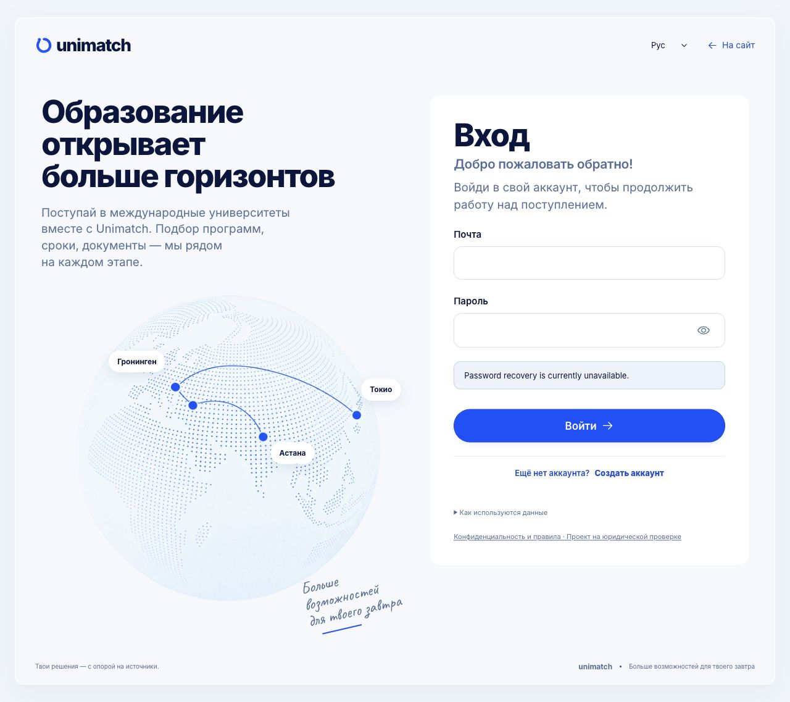

Открыть сайт · Fly release7 · commit66935473
Проверены главная, вход, HTTPS, API/БД и точная версия файлов. Каталог500вузов,14записей программ в9вузах; полное наполнение программ не завершено. Входной путь после авторизации в production не проверялся; локальные тестовые анкеты не переносились.
Перед9миграциями завершена полная резервная копия базы. Настройки авторизации, секреты и существующие процессы сохранены.
Подробный отчёт и ограничения · Квитанция развёртывания · Проверки публичного сервера

